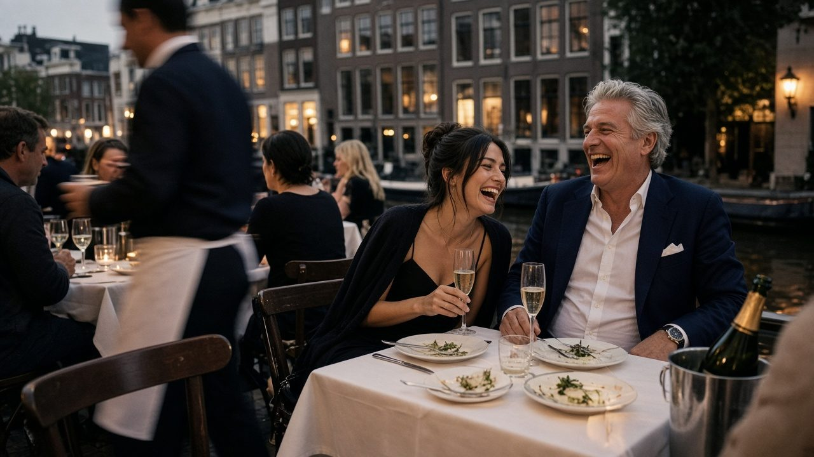

Sugardating, open over wat je zoekt.
Voor de gevestigde man die weet wat hij wil, en voor wie hem zoekt. Jullie spreken vooraf af wat je van elkaar verwacht. De rest blijft tussen jullie.
Discreet · Geen app nodig · Aanmelden is gratis
Je zegt wat je zoekt, de ander ook. Geen app op je telefoon, geen echte naam als je die liever voor je houdt. Alleen volwassenen die weten wat ze willen.
Hoe het werkt
Drie stappen.
- 01
Maak een profiel
Kies je rol, een gebruikersnaam en je regio. Een bijnaam is genoeg.
- 02
Zeg wat je zoekt
Gezelschap, begeleiding, samen reizen: zeg het vooraf, zodat niemand hoeft te raden.
- 03
Leer elkaar kennen
Stuur berichten en spreek af wanneer het voor jullie allebei klopt.
Sugardaddy
Voor de man die geeft, en precies weet wat hij zoekt.
Je bent gevestigd, je agenda is vol en je wilt gezelschap dat de moeite waard is. Je zegt vooraf wat je zoekt en wat je te bieden hebt.
- Gezelschap voor diners, reizen en evenementen
- Iemand steunen of begeleiden
- Duidelijke afspraken in plaats van verwachtingen
Sugarbaby
Voor wie weet wat ze wil, en dat ook zegt.
Je bent zelfstandig en bepaalt je eigen grenzen. Je zoekt een man met ervaring, die ruimhartig is en jouw tempo respecteert.
- Een ervaren gesprekspartner of mentor
- Nieuwe plekken en ervaringen
- Steun die past bij jullie afspraken
Vraag en aanbod
Wat zoek je, wat bied je?
Wat sugarbaby's zoeken
- Mentorschap en een netwerk
- Aandacht en goede gesprekken
- Luxe ervaringen: diners, hotels, uitjes
- Samen reizen
- Financiële ondersteuning, als jullie dat samen afspreken
Wat sugardaddy's zoeken
- Tijd en gezelschap
- Discretie
- Duidelijkheid vooraf
- Iemand om mee uit te gaan en te reizen
- Geen verwachtingen die niet zijn uitgesproken
Privacy
Discreet als uitgangspunt.
Bijnaam mag
Je hoeft je echte naam niet te gebruiken.
Jij kiest wat je deelt
Je woonplaats is een stad of regio, nooit een adres.
E-mail blijft privé
Andere leden zien je e-mailadres niet.
Geen app nodig
Werkt in de browser. Geen app-icoon op je telefoon.
Wat is sugardating?
Wat kost het?
Moet ik mijn echte naam gebruiken?
Wat gebeurt er met mijn gegevens?
Is dit een escortsite?
Amsterdam
Sugardating in Amsterdam.
Een lunch in de Negen Straatjes, een diner in Oud-Zuid. Amsterdam is groot genoeg om onopgemerkt af te spreken en klein genoeg om alles dichtbij te houden. Lees welke buurten zich lenen voor een eerste ontmoeting.
Andere steden

Kies je rol.
Aanmelden duurt een paar minuten. Een bijnaam is genoeg.